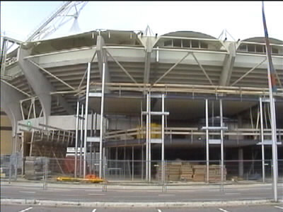
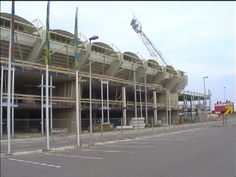
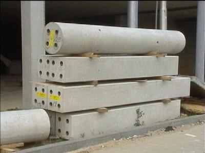

|
Voortgang bouw west-zijde |

De vloeren van de eerste en de tweede bouwlaag liggen er al.

Slechts de uiterst linkse en rechtse boog zullen straks nog zichtbaar
zijn. In het midden zal het gebouw nog hoger worden dan de
noord-zijde!

Balken en pilaren van gewapend beton.
©KPD